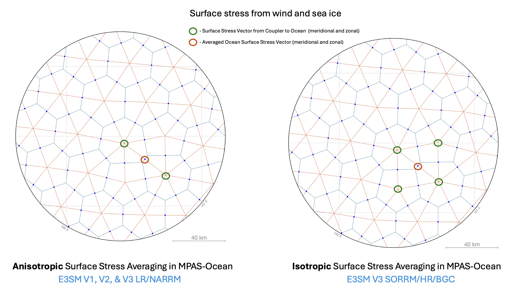

Horizontal Operators
The horizontal discretization in Omega is a staggered numerical scheme known as TRiSK. It defines discrete versions of basic differential operators (divergence, gradient, and curl) as well as other operators that are needed by the scheme, such as reconstruction of tangential velocity from its normal components. These operators act on quantities located at the cells, edges, and vertices of an MPAS mesh, and rely on the connectivity, geometric measures, and ordering conventions defined in the MPAS mesh specification. Omega provides reference implementations of these operators, each in a separate C++ class. The class name describes the operator and the mesh element associated with its result.
The following operators are currently implemented:
DivergenceOnCellGradientOnEdgeCurlOnVertexTangentialReconOnEdgeInterpCellToEdgeVectorReconOnCell
There are no user-configurable options; the method for InterpCellToEdge is located in Surface Stress Forcing.
Interpolate cells to edges
InterpCellToEdge contains two methods shown in Fig. 10:
InterpolateAnisotropicInterpolateIsotropic


Fig. 10 For a scalar quantity at the edge location shown in red, either average the two neighboring cellsOnEdge shown in green (left, anisotropic) or take the average of the four cellsOnVertex of each of the two verticesOnEdge, weighted by kiteAreasOnVertex.
The cellsOnEdge, cellsOnVertex, verticesOnEdge, and kiteAreasOnVertex
fields, along with their required ordering, are defined in the
MPAS mesh specification; see in particular
Connectivity and ordering requirements.
The isotropic interpolation has been shown to be less accurate than the anisotropic method, with higher error about pentagons, and should be used only when spatial smoothing is desired, e.g., in the context of wind stress coupling where both SfcStressZonal and SfcStressMeridional are interpolated from cells to edges, see Surface Stress Forcing.